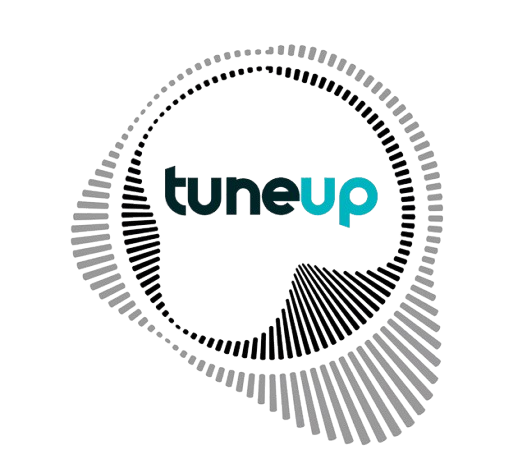

Project Description:
TuneUp is a mobile app designed to be your musical navigator, combining GPS and personalized playlists based on your destination. It tailors the soundtrack to your journey, recommending exciting spots and hidden gems along the way.
Project Details:
- Type: Group project
- When: First year of Master's
- Focus: UI Design
- Context: This project aimed to interact with everyday objects, like music, in an innovative way to enhance exploration and personalization.